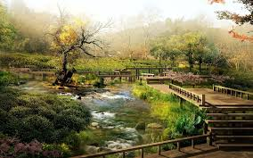
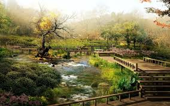

The samurai, members of a powerful military caste in feudal Japan, began as provincial warriors before rising to power in the 12th century with the beginning of the country’s first military dictatorship, known as the shogunate. As servants of the daimyos, or great lords, the samurai backed up the authority of the shogun and gave him power over the mikado (emperor). The samurai would dominate Japanese government and society until the Meiji Restoration of 1868 led to the abolition of the feudal system. Despite being deprived of their traditional privileges, many of the samurai would enter the elite ranks of politics and industry in modern Japan. More importantly, the traditional samurai code of honor, discipline and morality known as bushido–or “the way of the warrior”–was revived and made the basic code of conduct for much of Japanese society.
During the Heian Period (794-1185), the samurai were the armed supporters of wealthy landowners–many of whom left the imperial court to seek their own fortunes after being shut out of power by the powerful Fujiwara clan. The word “samurai” roughly translates to “those who serve.” (Another, more general word for a warrior is “bushi,” from which bushido is derived; this word lacks the connotations of service to a master.)Beginning in the mid-12th century, real political power in Japan shifted gradually away from the emperor and his nobles in Kyoto to the heads of the clans on their large estates in the country. The Gempei War (1180-1185) pitted two of these great clans–the dominant Taira and the Minamoto–against each other in a struggle for control of the Japanese state. The war ended when one of the most famous samurai heroes in Japanese history, Minamoto Yoshitsune, led his clan to victory against the Taira near the village of Dan-no-ura.
The strain of defeating two Mongol invasions at the end of the 13th century weakened the Kamakura Shogunate, which fell to a rebellion led by Ashikaga Takauji. The Ashikaga Shogunate, centered in Kyoto, began around 1336. For the next two centuries, Japan was in a near-constant state of conflict between its feuding territorial clans. After the particularly divisive Onin War of 1467-77, the Ashikaga shoguns ceased to be effective, and feudal Japan lacked a strong central authority; local lords and their samurai stepped in to a greater extent to maintain law and order. Despite the political unrest, this period–known as the Muromachi after the district of that name in Kyoto–saw considerable economic expansion in Japan. It was also a golden age for Japanese art, as the samurai culture came under the growing influence of Zen Buddhism. In addition to such now-famous Japanese art forms as the tea ceremony, rock gardens and flower arranging, theater and painting also flourished during the Muromachi period.
In the mid-19th century, the stability of the Tokugawa regime was undermined by a combination of factors, including peasant unrest due to famine and poverty. The incursion of Western powers into Japan–and especially the arrival in 1853 of Commodore Matthew C. Perry of the U.S. Navy, on a mission to get Japan to open its doors to international trade–proved to be the final straw. In 1858, Japan signed a commercial treaty with the United States, followed by similar ones with Russia, Britain, France and Holland. The controversial decision to open the country to Western commerce and investment helped encourage resistance to the shogunate among conservative forces in Japan, including many samurai, who began calling for a restoration of the power of the emperor. The powerful clans of Choshu and Satsuma combined efforts to topple the Tokugawa Shogunate and announce an “imperial restoration” named for Emperor Meiji in early 1868. Feudalism was officially abolished in 1871; five years later, the wearing of swords was forbidden to anyone except members of the national armed forces, and all samurai stipends were converted into government bonds, often at significant financial loss. The new Japanese national army quashed several samurai rebellions during the 1870s, while some disgruntled samurai joined secret, ultra-nationalist societies, among them the notorious Black Dragon Society, whose object was to incite trouble in China so that the Japanese army would have an excuse to invade and preserve order. Ironically–given the loss of their privileged status–the Meiji Restoration was actually engineered by members of the samurai class itself. Three of the most influential leaders of the new Japan–Inoue Kaoru, Ito Hirobumi and Yamagata Aritomo–had studied with the famous samurai Yoshida Shouin, who was executed after a failed attempt to kill a Tokugawa official in 1859. It was former samurai who put Japan on the road to what it would become, and many would become leaders in all areas of modern Japanese society.